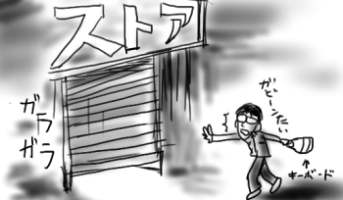
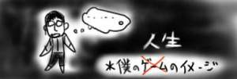
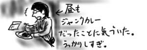

休日なので昼過ぎに起きだし、ふらふらと秋葉原まで出かけます。相変わらずダメだなぁ。
電車内で上遠野浩平の「Beat's Discipline SIDE1:[Exile]」を読了。どうでもいいけど、タイトルに関してKing Crimson好きすぎですよ？BeatでDisciplineでExilesですよ？章タイトルに「Starless & Bible Black」とか使ってますしね。おまけに次巻のタイトルは「SIDE2:[Fracture]」だそうですから、そのうち「Larks' Tongues In Aspic(太陽と戦慄)」とか「Three of a Perfect Pair」とかも出てくるのではないでしょうか。内容は、相変わらず、くどい文章で人並はずれた能力者がずったんばったんという感じです(ひどい)。読者からのツッコミを先回りする形で「○○は△△した。本当は××したかったが□□でダメだったのだ。」と書いちゃうのがくどさの原因だと思うんですが。あと、高校生男女の台詞の絡みが決定的に前時代的で陳腐なのはこの手の小説としては致命的だと思うのですが、はみだしものの心情が時々鋭く一言で言い切られたりするところが受けているのかなぁと思ったりも。問題は、はみだしものの人格が２つくらいしかないことで、名前以外でキャラの見分け、つきますか？僕はつけられません。今回もちょいちょいと名前が出てくるキャラが誰が誰やら(へぼ)。
能力名にバンド名つけたくて仕方ないんだろうなぁと思いながら読みました(ジョジョ)。
僕は、ノート型Macがまだ灰色をしてた頃のPowerBookDuoというマシンを未だに寝床のマシンとして使っているのですが、最近こいつのキーボードが錆び付いて来てちゃんと反応しません。気が付くと画面に「あああああああああああ…」と出て止まらなくなり、大変やばいです。やばいと打とうと思ったら「やあばあい」とか出ちゃうくらいやあばあいです。
それで秋葉原で中古Mac屋を眺めてたらDuoの中古キーボードが2,800円で売ってるのを発見してさっそく購入。これだから秋葉は大好きさ！(Vサインで)
さっそく帰って取り付けると「ああああ」現象も解消。中古といいつつもまったくキートップなどがすり減っておらず、新古品ではないかと思われます。で、新しくすると物凄くキーが軽くて驚愕。いつのまにタイプライター検定養成ギブスとなっていましたか！＞前キーボード。

秋葉原で時間を使い過ぎて、近所のスーパーの「閉店間際 半額乱れ打ち 一週間分の食料を手に入れろ」大会に1分の差で参加できませんでした。(オチ)
休日なので昼過ぎに起きだし、ふらふらと大宮まで出かけます。
いつものゲーセンで斑鳩。ここのゲーセンは大宮でも古ぼけた薄汚い部類なんですが、レバーの具合がよいのと唯一緩めの設定(3/7参照)なのでどうしてもここになってしまうのです。大宮近辺の斑鳩好きがみんな集まって来ちゃうよ！と危惧を抱いていましたが、来店する人はみんな大宮で唯一入荷されている「バーチャロンフォース」に夢中なのでほとんど僕専用斑鳩なのです。マスターいつもの！って感じです(違います)。
スポーツ選手は1日練習を休むと3日分くらい後戻りするらしいですが、斑鳩も1週間やらないと3面あたりで終了。いやはや、人生の戦いだなぁ。4回くらいやってようやく4面に抜けられるようになり、10回目でようやくラスボスに到達！1段階目をクリア。あとちょっとだよ！4面はEasy特権であるところの「ラフレシアを外周でやりすごす」プレイなんですけどね。チェーンも、1面/53chain -> 2面/48chain -> 3面/13chain -> 4面/17chain とかそんな感じで、3面でチェーンを安定させるのがとりあえずの課題です。
かように、僕にとってゲームとは大層個人的/自己鍛錬な代物であり、他人と一緒に楽しくプレイするのが主目的なゲームをやりこむといった発想が皆無なのですが、考えてみれば僕の人生、他人と一緒に楽しくプレイということもあまりないのが理由では？ということに気付いて、晩飯のCoCo壱もしょっぱい感じでした。高校時代、体育の授業もサッカーより学校の周りマラソンさせられる方がよっぽど気楽で好きでしたしね。斑鳩も並んで他人と持ち回りながらプレイするのだとしたらこれほどやり込んでないのではと思われます。困った人だなぁ。

で、CoCo壱ですが、僕は結構な隠れCoCo壱ファンなので、2月末までの期間限定メニューであるところの「ライスカレー(ウスターソースをかけて食う、この名古屋発想！)」を食べ損なったのが悔しくて、5月末までの「インド"風"チキンキーマカレー」を食したわけですが、この"風"の部分がいかにもCoCo壱的でよいですよね。普通のポークカレーのアシッドさが薄れて普通のカレーぽさが増えてるところは微妙なところです。カレーを食いながら小冊子「ココイチ」を見るのが好きなのですが、いつの間にか装丁が変わっており表紙をいくつかの投稿イラストが飾るようになっていて、萌え絵が混じっているのでみなさん是非確認して下さい(vol.14)。内部の投稿ページにも「よーし、パパ10辛頼んじゃうぞ〜」や「飲んだあと ラーメンやめて ココイチへ」などのサラリーマン川柳くずれみたいなのもあっていやはや、CoCo壱は楽しいな。

会社帰りにたまたまコンビニに寄って(確かゴミ袋を買うため。僕の人生を入れます)、出来心で「水木しげるの妖怪シリーズ 妖怪辞典」食玩を購入。前の「ゲゲゲのしげる妖怪絵巻」の出来がイマイチだったので、発見以降今まで無視して来たのに。ついに。で、いきなり一番どうでもいい感じの「あかなめ」が出てへこー。
デジカメがないので写メールで撮ったよ。わざわざ風呂場で。とんだコダワリです。「百目」か「サラリーマン山田(妖怪じゃありません)」が出たら会社の机に置こうと思ったのに残念だなぁ(主に嫌がらせの方向で)。相変わらず出来の方はボロボロでパーツの継ぎ目が隙間だらけ。さすがに、あかなめのケツが４つに割れているのは正直どうかと思います。写真じゃよく分かりませんが、顔つきが水木しげるというよりはつのだじろう(すごいドメイン名です！)になっているのもマイナスポイントと言えます。でも、あと１つくらいは買ってもいいかな(買うのかよ)。
金曜日のお楽しみと言えば「TRICK2」。この日ばかりは普段全くTVを見ないでみんなの話題に置いて行かれがちな僕でもしっかりとTVの前にポテトチップスを用意してスタンドバイです。やたら濃ゆい脇役達の配役もさることながら、ビンボくさい仲間由紀恵がうまそうに食い物を頬張ったり、写真撮影されて顔をしかめる様がかなりたまりませんよ？そして今回はかなり後味の悪いオチが。うわーい。次回も楽しみです！(かなり頭の悪い感想)。
昨日の種明かしからですが、偉そうにprofileに斑鳩の戦績を載せ、４面ボス鶚(ミサゴ)まで到達したことをアピールしたりしましたが、もちろんEasyプレイであり、先日4面ボス名を確認するために立ち読みした月刊アルカディアでNormalプレイではシャッター開けきった時点で白黒交互に極太レーザーが飛んでくることを知って気を失いかけました。ついでに言っておくと、デフォルトでは残機２の300万エブリなので、相当にヌルイ設定筐体なだけでなく、Cボタン装備(力の解放ボタン。超便利)です。脳が白黒に汚染されててもう口を開けば斑鳩イカルガとうるさいですよね、この陰陽野郎！清明萌え！
でも、埼玉では誰もプレイしてないので、全部独学で進んでいるので褒められてもいいのでは？(ゲームに脳を犯されている時点で褒められません)
で、インデックスのオレ顔マークがドクロと半々になったことについては、友人達のリアクションは全く皆無で世界は荒野だと思いましたが、脳が斑鳩に犯されている僕のこと、もちろん理由は「チェーンを考えよう」という回りくどいトンチ禅問答を込めたからに他なりません。うわあ本当に分からないや。伝わらないや。簡単に言うと以下のような感じです。
↑上記が以下↓のようなパーツ配置になっている(not ↑HIGH-LOWS↓)
● ○ (頭)
○ ● (目)
○ ● (口)
p|q (斑鳩が行く....)
僕の予想では、バラ撒き弾を吐いてくる口パーツを壊すと目パーツから前方に極太レーザーが飛んでくるはずなんですよ。そいで、目パーツを壊すと次は頭パーツから前方に極太レーザーが飛んでくるんですよ、あくまで予想でね。まぁ僕が撃つんですけど。だからですね、きっとですよ、以下のようになるはずなんですよ。
● ○
○ ●
○
p|q (速効で口を壊して黒で待機)
● ○
○ ●
○ p|q (レーザーを受けながら撃って前進)
● ○
○p|q (白にチェンジして残りの黒パーツに密接→力の解放)
○
○
○p|q (白のままレーザーを受けて力の解放連打)
○
p|q (チェーン+2で継続)
僕は阿呆ですか？折角ページを再開してもプレイ人口から考えてあきらかに市場が狭い話題で狙い撃ちですよ。自殺行為ですよ。そんなんでやっていけるのか。本当にお前はそれでいいのか。トミーフェブラリーの「川瀬智子+眼鏡+80年代エレポップ」という最強の布陣は一体誰が考え付いたのか、などいろいろ自問してたら頭が痛んで来たので(元々痛んでます)、今日のところはこれで寝ることにします。明日はもっとマシな話題にしたいよ。できればいいなぁ(ナチュラルボーンオタクなので無理)。
すっげー久しぶりですよ？あんまり久しぶりなんで日記の書き方なんてすっかり忘れんぼ(not のむらしんぼ)です。なんか今日は細々としたところをいじってたら終わってしまったので、明日からちゃんと日記をつけたいなぁ！(希望)とまぁ、そんな感じです。
そうそう、近況としては、nanoloopを買いましたよ。おもしろいです(小学生のような感想)。いい年して、ゲームボーイカラーに向かって気が付いたら1時間とか普通です。でもぼくのじまんのPowerBookG4にはライン入力が付いてないのでみんなに自慢の楽曲を聞かせてあげられないんだ。とてもざんねんです。オチとしては、作るパターン、作るパターン、あまりにヘボくて、自分の音楽的才能のなさに結構へこみました。目指せ！pan sonic。ミニ丸。